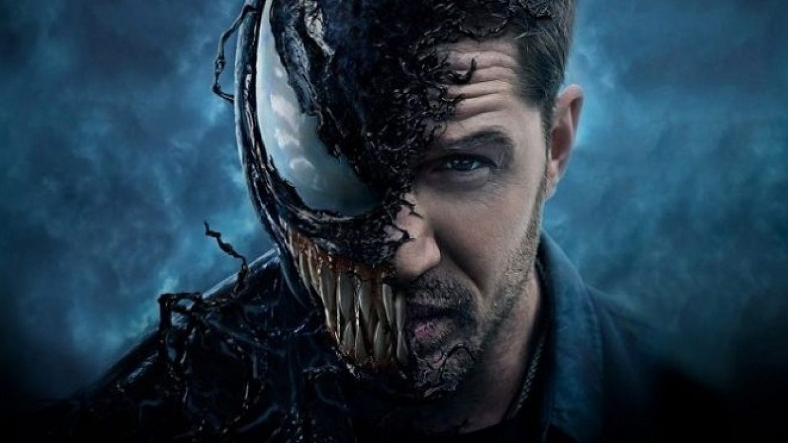
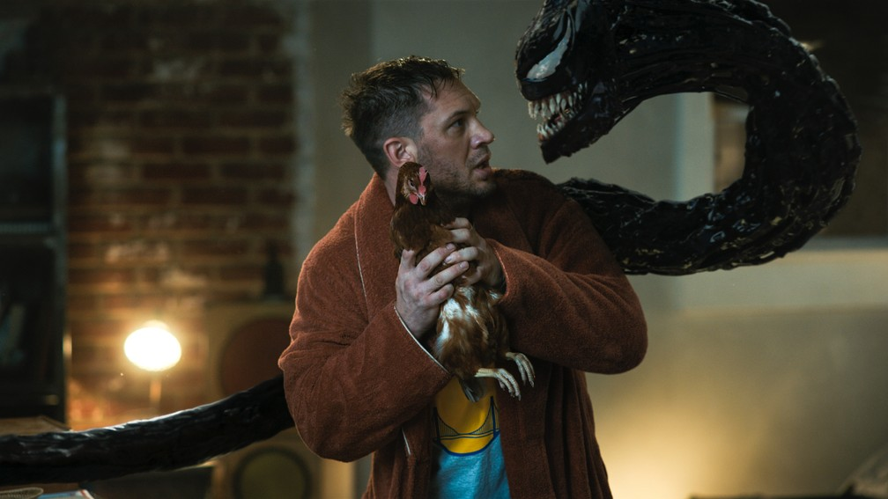
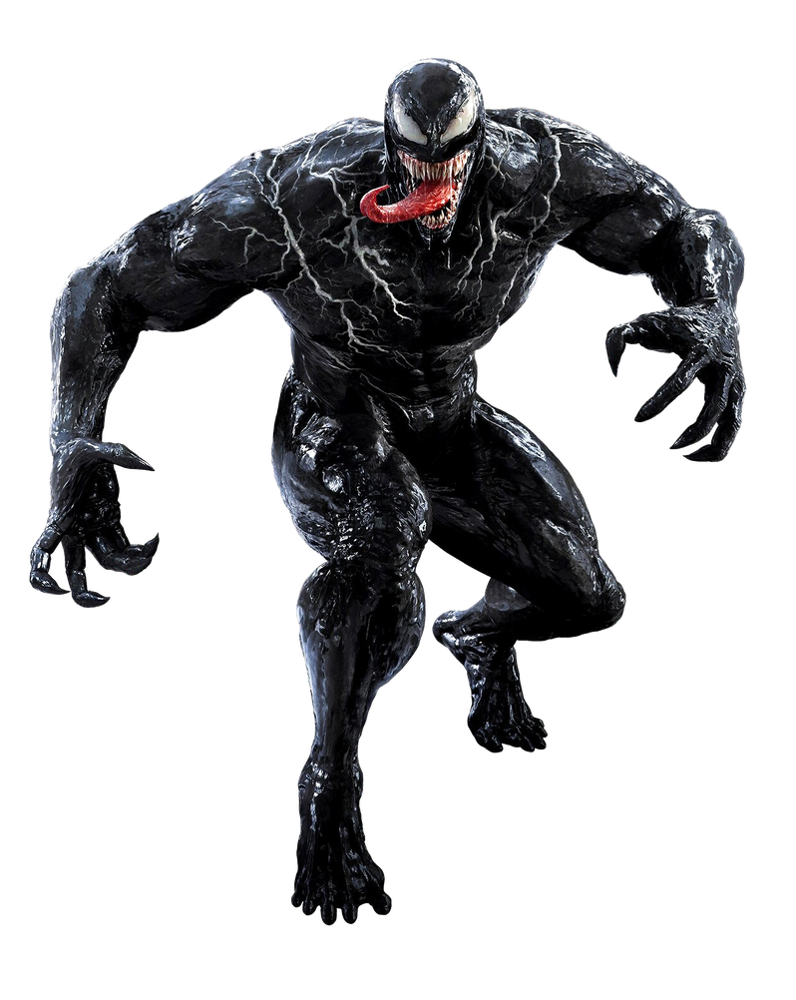

Venom é um filme estadunidense anti-heroi de 2018, baseado no personagem de mesmo nome da Marvel Comics, produzido pela Columbia Pictures em associação com a Marvel[2] e a Tencent Pictures e distribuído pela Sony Pictures Releasing. É o primeiro filme do Universo Marvel da Sony e foi dirigido por Ruben Fleischer com um roteiro escrito por Scott Rosenberg, Jeff Pinkner e Kelly Marcel. O elenco é composto por Tom Hardy como Eddie Brock / Venom, ao lado de Michelle Williams, Riz Ahmed, Scott Haze e Reid Scott. Em Venom, o jornalista Brock ganha superpoderes depois de ser infectado por um simbionte alienígena cuja espécie planeja invadir a Terra.
  